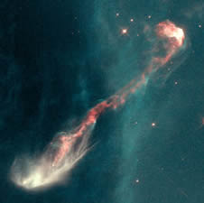
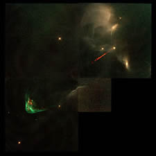
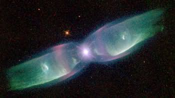
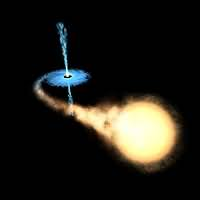

Jets of matter occur in many astrophysical situations, but can broadly be classified into two types: stellar jets and galactic jets. Stellar jets arise from a number of different sources (T Tauri stars, planetary nebulae, neutron stars and stellar black holes), but galactic jets are believed to have a single source – a supermassive black hole at the centre of a galaxy.
Stellar jets from T Tauri stars are common in star forming regions. Examples of these Herbig-Haro objects (HH; named after George Herbig and Guillermo Haro who independently discovered this type of object) are shown in the images below. As material falls onto the protostar from the surrounding accretion disk, it is thought that interactions between the magnetic fields of the rotating star and the accretion disk turn the in-falling material around and eject it from the stellar magnetic poles. This is what we observe as stellar jets.
However, this accretion process is not smooth, and sudden increases or decreases in the rate of accretion onto the protostar can occur. The effect of a sudden increase in the accretion rate is to produce ‘bullets’ of denser material in the jets. These can be seen in the middle and right-hand images below. In particular, careful inspection of the right-hand image (actually a 4 frame movie) shows these bullets of material progressing along the jet, giving a direct measure of their velocity.
|

HH-47 is a star still in the process of forming from the gas of the dense Gum Nebula. The jets of material, which are half a light year long, emanate from the tiny bright dot at the centre of the image. However, this dot is not the star itself, but is rather a Solar System sized region of material surrounding the young protostar.
Credit: STScI & NASA |

The jet from HH-34 in the constellation Vela shows both the ‘machine gun’-like bullets of material being shot along the jet (upper right) as well as the interaction between the jet and surrounding interstellar medium (lower left).
Credit: J. Hester (Arizona State University), the WFPC 2 Investigation Definition Team, and NASA |

Careful inspection of this time-lapse movie of HH-30, shows ‘bullets’ of material propagating along the jet. This young star is about 450 light years from Earth in the Taurus-Auriga molecular cloud.
Credit: NASA, A. Watson (UNAM), K. Stapelfeldt (JPL), J. Krist (STScI) and C. Burrows (ESA/ STScI) |
Another important aspect of stellar jets is their interaction with the interstellar medium. In particular, since T Tauri are found in star forming nebulae, their jets interact with the gas remaining from the formation of the star itself and effectively ‘sweep out’ the interstellar material in their path. With time and distance, the swept out material builds up at the head of the jet providing increased resistance. This eventually forms a shock front, with the jet having to force its way through the accumulated gas and dust. Examples of shock fronts created in this way can be seen in the left-hand and middle images above.

Credit: B. Balick (University of Washington), V. Icke (Leiden University), G. Mellema (Stockholm University), and NASA
Of course, it is not only young stars that can exhibit stellar jets. They are also observed in the final stages of evolution for stars similar to (or a little more massive than) our Sun – in the planetary nebula stage. The jets of planetary nebulae have similar speeds to the jets from newly forming stars, but are generally less well collimated (i.e. they are broader for their length). Their formation mechanism differs in that it is material flowing out of the star that is diverted into the jet, and the collimation is usually associated with a confining equatorial disk that blocks equatorial outflow and directs the material into polar jets. The sources of such disks vary, but they are often found in binary systems. For example, the star at the heart of the planetary nebula M2-9 (right) is known to be a spectroscopic binary (a pair of stars orbiting so close to each other that we are unable to separate them in images). The closeness of the two stars causes a ring of gas to be thrown off. This encircles the pair of stars, blocking the equatorial ejection of gas from the dying star and diverting it into polar outflows.

Credit: ESA, NASA, and Felix Mirabel (French Atomic Energy Commission and Institute for Astronomy and Space Physics/Conicet of Argentina)
The final sources of stellar jets are compact objects (such as stellar black holes and neutron stars) in binary systems. The central compact object is surrounded by an accretion disk formed through Roche-lobe overflow from a companion giant star. Similarly to T Tauri stars, the jets are formed as this material falls onto the compact object and is ejected from the magnetic poles.